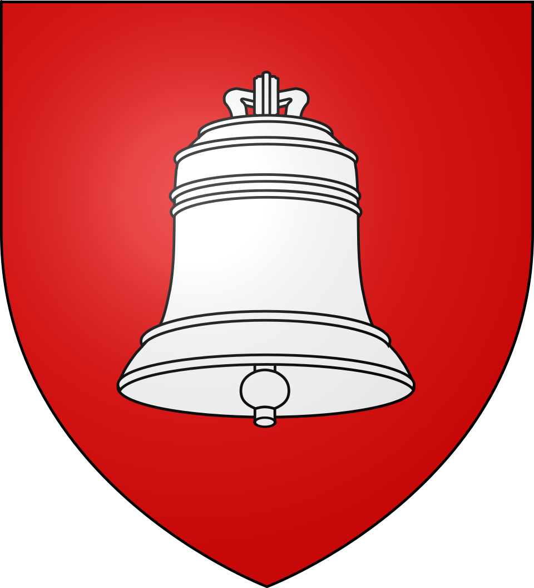
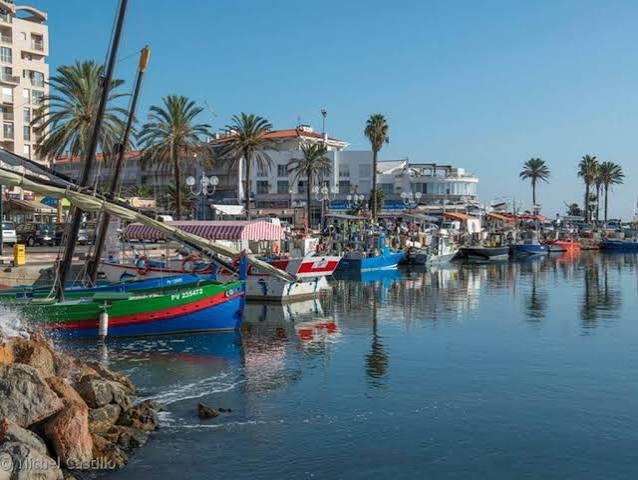

Saint-Cyprien
Village Catalan


⟹ Village · Port · Méditerranée ⟸

Un territoire ancien entre la plaine du Roussillon et la Méditerranée. Saint-Cyprien se trouve dans la plaine littorale roussillonnaise, à une quinzaine de kilomètres au sud-est de Perpignan. Avant de devenir l'une des grandes stations balnéaires de la côte catalane, la commune est d'abord un territoire rural tourné vers les terres agricoles, les zones humides et la mer. Le noyau historique s'est constitué en retrait du rivage, une implantation caractéristique des villages anciens du littoral méditerranéen, longtemps exposés aux tempêtes, aux incursions venues de la mer et aux zones marécageuses.
904 : la chapelle de Villerase. L'histoire documentée de la commune remonte au haut Moyen Âge. Une première chapelle est attestée dès 904 à Villerase, ancien hameau du territoire cypriannais. Cette mention constitue l'un des premiers repères connus de l'occupation médiévale locale. Le Roussillon appartient alors à l'espace des comtés catalans issu de la réorganisation carolingienne de la région.
Le développement du village médiéval. Aux XIIe et XIIIe siècles, Saint-Cyprien se structure autour de ses terres agricoles et de ses établissements religieux. La tradition historique locale évoque l'influence des Templiers et d'Arnaud de Villeneuve. Au XIIIe siècle, le village compterait environ 350 habitants, vivant essentiellement de l'agriculture et de l'élevage. Une nouvelle église est édifiée en 1385, signe de l'enracinement et de la croissance de la communauté.

Un village catalan devenu français. Pendant plusieurs siècles, Saint-Cyprien partage l'histoire politique du Roussillon et de la Catalogne du Nord. Le territoire passe successivement sous l'autorité des souverains catalano-aragonais puis de la monarchie hispanique. Le traité des Pyrénées de 1659 rattache définitivement le Roussillon au royaume de France. Le changement de souveraineté n'efface toutefois ni la langue catalane, ni les coutumes, ni les formes traditionnelles d'organisation agricole et villageoise.
XVIIIe siècle : renouvellement du cœur religieux. L'ancienne église romane est remplacée au XVIIIe siècle par un nouvel édifice. Le clocher et l'église demeurent aujourd'hui des repères majeurs dans le paysage du vieux Saint-Cyprien. Autour d'eux se développe un tissu de rues étroites, de maisons basses et de places qui conserve le caractère du village roussillonnais d'origine.
De la terre à la mer. Jusqu'au XXe siècle, Saint-Cyprien reste avant tout une commune rurale. Agriculture, élevage, vigne, cultures maraîchères et activités liées aux zones humides rythment la vie locale. La mer est présente dans l'économie par la pêche et les échanges, mais le village reste distinct du rivage. Cette organisation traditionnelle explique encore aujourd'hui la dualité entre Saint-Cyprien Village et Saint-Cyprien Plage.
1939 : la Retirada et le camp de Saint-Cyprien. L'un des épisodes les plus douloureux de l'histoire contemporaine de la commune survient à la fin de la guerre civile espagnole. Entre la fin janvier et la mi-février 1939, près d'un demi-million de républicains espagnols franchissent la frontière française. Les autorités aménagent dans l'urgence plusieurs camps sur le littoral roussillonnais, à Argelès-sur-Mer, Saint-Cyprien puis au Barcarès.
Le camp d'internement de Saint-Cyprien est installé au bord de la Méditerranée, sur la plage, les dunes et les landes proches de l'étang. Les premiers réfugiés y vivent dans des conditions extrêmement précaires : absence initiale d'abris, manque d'eau potable, alimentation insuffisante, froid, vent et problèmes sanitaires. Des activités éducatives, culturelles et sportives sont progressivement organisées par les internés eux-mêmes. Cette mémoire de la Retirada constitue aujourd'hui une composante essentielle de l'histoire de Saint-Cyprien et du Roussillon.
Les années 1960 : une métamorphose sans précédent. Saint-Cyprien change radicalement d'échelle au cours des Trente Glorieuses. En 1963, l'État lance la Mission Racine, vaste programme d'aménagement touristique du littoral du Languedoc-Roussillon destiné à créer de nouvelles stations balnéaires et à équiper la côte méditerranéenne française.
1967 : la naissance du grand port moderne. Le port de plaisance de Saint-Cyprien est aménagé à partir de 1967 dans le cadre de cette politique. Le 24 octobre de la même année, le général de Gaulle survole le littoral aménagé par la Mission Racine. Prévu à l'origine pour quelques centaines de bateaux, le port connaît une croissance extrêmement rapide : environ 300 places sont envisagées en 1969, puis 700 dès l'année suivante. Il compte aujourd'hui près de 1 900 anneaux, dont de nombreuses marinas, et figure parmi les grands ports de plaisance de la côte méditerranéenne française.
Saint-Cyprien Plage et l'essor touristique. La création du port s'accompagne de nouveaux quartiers, résidences, voies de circulation, équipements sportifs et espaces de loisirs. La population passe de 2 592 habitants en 1968 à plus de 12 000 habitants en 2023. Le village agricole devient ainsi une commune littorale à double visage : le cœur ancien demeure à l'intérieur des terres tandis qu'une vaste station touristique se déploie autour du port et des longues plages de sable.
Le domaine des Capellans et son jardin. Au sud de la station, le Jardin des Plantes des Capellans occupe le parc de l'ancienne Villa des Capellans, propriété édifiée à la fin du XIXe siècle par la famille de Rovira. Conçu avec le concours du naturaliste et botaniste Charles Naudin, le parc est aujourd'hui un jardin paysager de cinq hectares rassemblant plus de 500 espèces. Il constitue le seul jardin du département à bénéficier du label national « Jardin remarquable ».
François Desnoyer et la vocation artistique. Dans les années 1960, le peintre François Desnoyer (1894-1972) choisit Saint-Cyprien comme lieu de vie et de création. Avec le soutien du maire Jean Olibo, il contribue à structurer une véritable politique culturelle. À sa mort, son legs à la commune comprend plus de 700 œuvres, dont des pièces de sa collection personnelle liées à des artistes comme Maillol, Chagall ou Gromaire. Cet ensemble est à l'origine des actuelles Collections de Saint-Cyprien.
Une identité entre mémoire et modernité. Saint-Cyprien ne peut donc se réduire à son image balnéaire. Son identité rassemble plusieurs histoires superposées : un village médiéval catalan, une commune agricole de la plaine du Roussillon, un lieu majeur de la mémoire de l'exil républicain espagnol, une station née des grands aménagements des années 1960 et un foyer culturel marqué par l'héritage de François Desnoyer. Cette coexistence entre village, mer, mémoire et art fait aujourd'hui toute la singularité de la commune.
Repères : 904, chapelle de Villerase · 1385, nouvelle église · 1659, traité des Pyrénées · 1939, camp de la Retirada · 1967, création du port moderne · années 1960-1972, héritage François Desnoyer.
Chronologie synthétique de Saint-CyprienPour aller plus loin — sources et documentation :
• Ville de Saint-Cyprien — Situation géographique, histoire et Retirada
• Ville de Saint-Cyprien — histoire et caractéristiques du port
• Ville de Saint-Cyprien — Collections François Desnoyer
• Office de tourisme — Jardin des Plantes des Capellans
• INSEE — données démographiques de Saint-Cyprien
François Desnoyer (1894-1972) est la grande figure artistique attachée à Saint-Cyprien. Peintre majeur de la figuration française du XXe siècle, il s'installe dans la commune dans les années 1960. Son legs de plusieurs centaines d'œuvres constitue le socle des Collections de Saint-Cyprien.
Jean Olibo, maire de Saint-Cyprien durant la grande période d'aménagement du littoral, accompagne à la fois la transformation touristique de la commune et la création d'une politique culturelle durable. Son action est étroitement associée à l'installation de François Desnoyer et au développement de la station moderne.
La Festa Major, célébrée traditionnellement autour de la mi-septembre, rappelle l'attachement de la commune à ses traditions catalanes : musique, produits du terroir, animations populaires et vie associative prolongent une identité bien plus ancienne que la station balnéaire.
La mémoire des républicains espagnols internés en 1939 constitue enfin un patrimoine humain majeur. Elle relie Saint-Cyprien à l'histoire européenne de l'exil, de la guerre civile espagnole, de la Seconde Guerre mondiale et, pour nombre d'anciens internés, de la Résistance et de la déportation.
Accès : Saint-Cyprien se situe à environ 15 km de Perpignan. L'accès principal se fait par la route depuis Perpignan, Elne et Argelès-sur-Mer.
Office de tourisme : Quai Arthur Rimbaud, 66750 Saint-Cyprien, au niveau du port. Il renseigne sur les visites, plages, activités nautiques, patrimoine, marchés, événements et itinéraires cyclables.
Organisation de la commune : pour une découverte complète, il faut distinguer le village historique, autour de l'église et du musée, et Saint-Cyprien Plage, organisé autour du port, des plages et des quartiers touristiques.
Jardin des Plantes : situé rue Verdi, quartier des Capellans. Les horaires variant selon la saison, il est conseillé de vérifier les informations actualisées de l'office de tourisme avant la visite.
Musée : Les Collections de Saint-Cyprien se trouvent rue Émile Zola, dans le village. Elles présentent le fonds François Desnoyer ainsi que plusieurs expositions temporaires au cours de l'année.